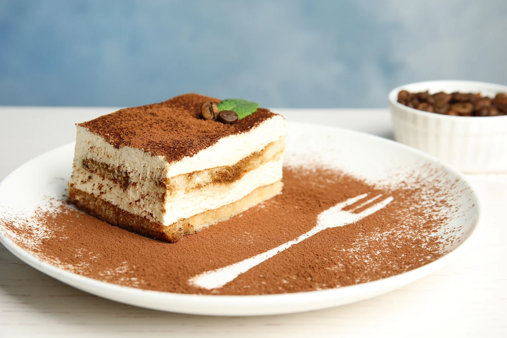

What does Tiramisu look like? general overview

Description
Tiramisu is an italian dessert made in 3 sections, first you prepare cream, combine it with a layer of ladyfingers bisccits soaked in nescafe, then another layer of both cream and ladyfingers, sprinkle it with cocoa at the top and leave it in the fidge overnight! around 8 hours.
Ingredients
- ladyfingers
- a cup of nescafe
- cheese cream
- whipping cream
- 6 eggs
- cup of sugar
- cocoa
Steps
- separate 6 egg yolks and stir them on a hot boiling pot by smoke with a cup of sugar until a lighter shade
- combine with it whipped cream and cheese cream
- soak ladyfingers with nescafe and put them in the bottom layer
- put a layer of the combine cream in step 2
- repeat step 4
- sprinkle cocoa poweder
- put in the fridge